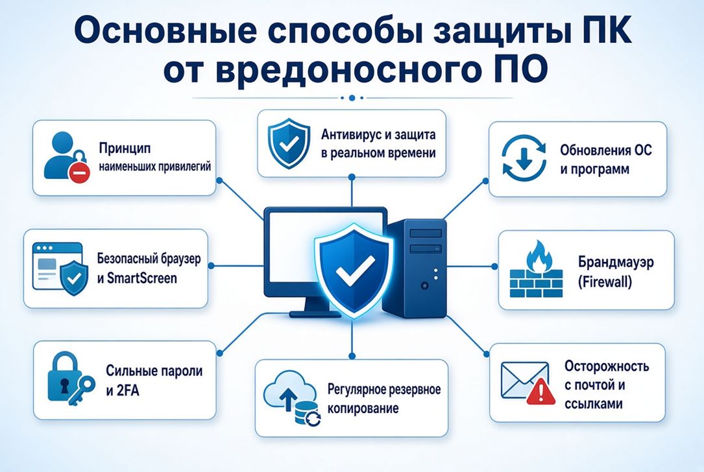
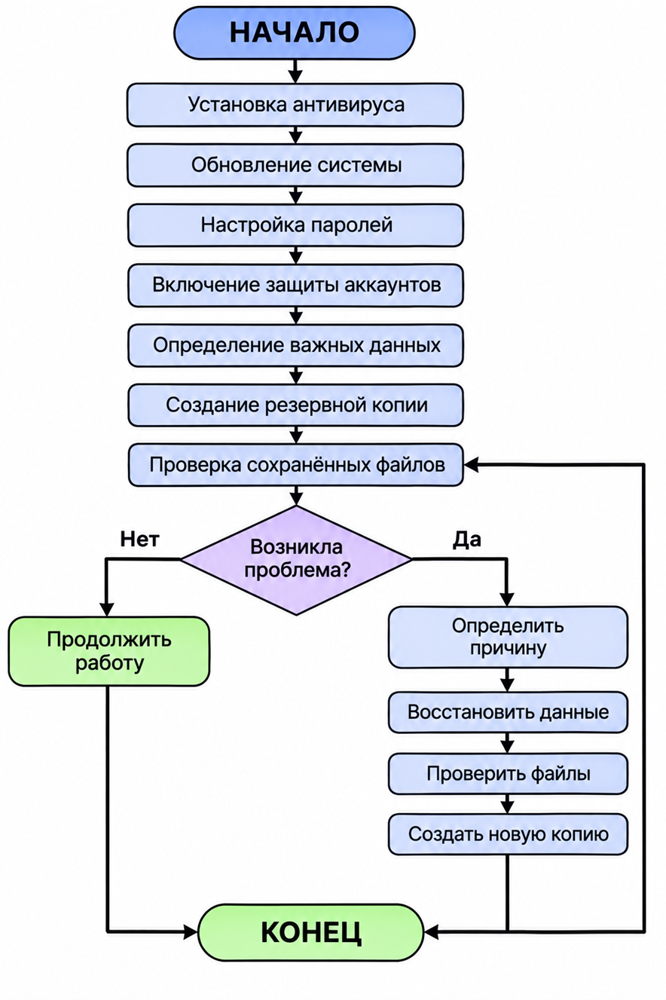
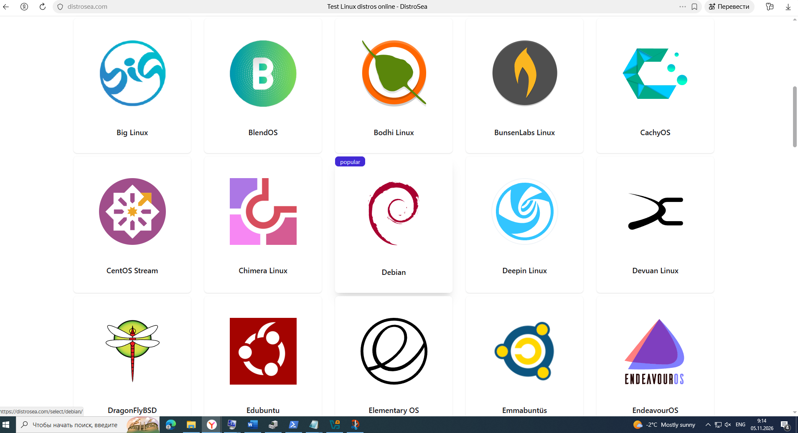
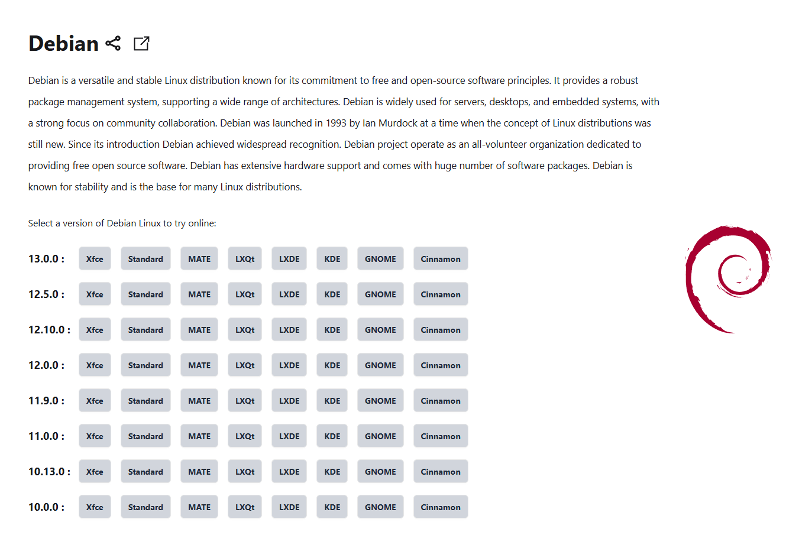
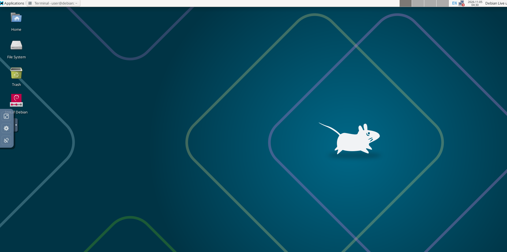
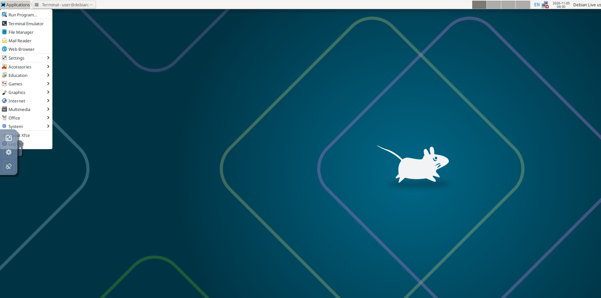

2 ноября 2026
1. Сравнительная таблица ОС
| Критерий | Windows | macOS | Linux |
|---|---|---|---|
| Год выпуска | 1985 | 2001 | 1991 |
| Разработчик | Microsoft | Apple | Сообщество |
| Устройства | ПК, ноутбуки | MacBook, iMac | ПК, серверы |
| Стоимость | Платная | Бесплатная* | Бесплатная |
| Безопасность | Высокая | Высокая | Высокая |
* macOS бесплатна для владельцев устройств Apple.
3. Системные требования ОС
| Критерии | Windows 11 | macOS | Ubuntu Linux |
|---|---|---|---|
| Процессор | 1 ГГц, 2 ядра | Apple / Intel | 2 ГГц, 2 ядра |
| ОЗУ | 4 ГБ | Зависит от Mac | 4 ГБ |
| Место на диске | 64 ГБ | Зависит от Mac | 25 ГБ |
| Видеокарта | DirectX 12 | Совместимая с Mac | Поддержка 3D |
| Тип устройства | ПК, ноутбук | MacBook, iMac | ПК, ноутбук |
4. Подготовка к установке ОС
- Проверка совместимости с системными требованиями.
- Резервное копирование важных файлов.
- Проверка оборудования (диск, ОЗУ).
- Скачать ISO с официального сайта.
- Создать загрузочную флешку.
- Настроить BIOS/UEFI - выбрать USB.
- Запустить установку.
5. Способы установки ОС
| Способ | Описание | Плюсы | Минусы |
|---|---|---|---|
| USB-флешка | С загрузочной флешки | Быстро, удобно | Нужно подготовить флешку |
| DVD-диск | С установочного диска | Простой способ | Нужен DVD-привод |
| Через интернет | Загрузка из сети | Не нужен диск | Нужен стабильный интернет |
| По сети (PXE) | С сетевого сервера | Для многих ПК | Нужна настройка сервера |
| Восстановление | Из резервной копии | Сохраняет настройки | Нужна заранее созданная копия |
| Виртуальная машина | Внутри программы | Несколько ОС на одном ПК | Требует ресурсов |
6. Создание загрузочной флешки
Нужно: ПК с интернетом, USB от 8 ГБ, Media Creation Tool.
- Вставить флешку и сохранить с неё важные файлы.
- Скачать Media Creation Tool с сайта Microsoft.
- Запустить, принять условия, выбрать язык и версию Windows.
- Выбрать «USB-устройство флэш-памяти» и свою флешку.
- Дождаться записи и безопасно извлечь флешку.
Во время записи нельзя вытаскивать флешку.
7. Параметры BIOS / UEFI
- Boot Priority - порядок загрузки (для установки выбрать USB).
- Boot Mode - UEFI или Legacy BIOS.
- Secure Boot - защита от непроверенных программ.
- USB Boot - разрешает загрузку с USB.
- SATA Mode - AHCI или RAID.
- TPM 2.0 - нужен для Windows 11.
- Fast Boot - ускоряет запуск, иногда мешает загрузке с флешки.
- Date and Time - дата и время.
9. Файловые системы
| ФС | Где используется | Плюсы | Минусы |
|---|---|---|---|
| FAT32 | Флешки, карты памяти | Работает везде | Файлы не больше 4 ГБ |
| NTFS | Windows, диски | Надёжная, большие файлы | Слабая поддержка другими ОС |
| exFAT | Флешки, внешние диски | Большие файлы, Windows + macOS | Меньше функций защиты |
| ext4 | Linux | Надёжная, быстрая | Windows без доп. программ не читает |
| APFS | macOS | Хороша для SSD, шифрование | В основном только Apple |
10. Установка Windows
- Подготовить загрузочную флешку и сохранить важные файлы.
- Вставить флешку → Boot Menu (F2 / F12 / Del / Esc) → выбрать USB.
- Выбрать язык → «Установить» → ключ (если есть) → версию ОС.
- Принять лицензию → «Выборочная» → выбрать диск.
- Дождаться окончания, настроить систему, установить драйверы.
Не выключайте ПК во время установки. Используйте только официальный образ.
11. Ubuntu и Linux Mint
| Характеристика | Ubuntu | Linux Mint |
|---|---|---|
| Разработчик | Canonical | Linux Mint Team |
| Основа | Debian | Ubuntu / Debian |
| Интерфейс | GNOME | Cinnamon |
| Удобство | Современный | Похож на Windows |
| Производительность | Больше ресурсов | Есть лёгкая версия Xfce |
| ОЗУ | От 6 ГБ | От 2 ГБ (рек. 4 ГБ) |
| Стоимость | Бесплатная | Бесплатная |
12. Первоначальная настройка ОС
- Язык и регион.
- Дата и время.
- Подключение к интернету.
- Создание учётной записи.
- Настройки конфиденциальности.
- Установка драйверов.
- Обновление системы.
- Установка нужных программ.
- Настройка рабочего стола.
- Проверка работы устройств.
13. Создание учётной записи Microsoft
- Пуск → Параметры → Учётные записи → Другие пользователи.
- «Добавить учётную запись».
- Выбрать Microsoft или локальную учётную запись.
- Ввести имя, пароль и контрольные вопросы.
- При необходимости сделать администратором.
- Выйти и войти в новую учётную запись.
14. Основные драйверы
- Видеокарта - изображение и графика
- Звуковая карта - колонки, наушники, микрофон
- Сетевая карта (LAN) - интернет по кабелю
- Wi-Fi - беспроводная сеть
- Чипсет - работа материнской платы
- Bluetooth - беспроводные устройства
- USB - порты и устройства
- Принтер и сканер
3 ноября 2026
1. Антивирусные программы
| Функция | Kaspersky | ESET NOD32 | Windows Defender | Avast |
|---|---|---|---|---|
| Защита от вирусов | Да | Да | Да | Да |
| Проверка файлов | Да | Да | Да | Да |
| Защита в реальном времени | Да | Да | Да | Да |
| Удаление вирусов | Да | Да | Да | Да |
| Защита от фишинга | Да | Да | Да | Да |
| Проверка флешек | Да | Да | Да | Да |
| Защита от шпионского ПО | Да | Да | Да | Да |
| Защита интернета | Да | Да | Да | Да |
| Брандмауэр | Да | В расширенных версиях | Да | Да |
2. Восстановление приложения
- Закрыть и снова запустить приложение.
- Перезагрузить компьютер.
- Проверить обновления приложения и Windows.
- Проверить приложение антивирусом.
- Параметры → Приложения → «Исправить».
- Сбросить настройки или переустановить.
3. Ошибки при установке программ
| № | Ошибка | Причина | Устранение |
|---|---|---|---|
| 1 | Недостаточно места | Мало места на диске | Освободить диск |
| 2 | Повреждён файл | Ошибка скачивания | Скачать заново |
| 3 | Несовместимость | Не подходит версия Windows | Совместимая версия |
| 4 | Ошибка драйверов | Устаревшие драйверы | Обновить драйверы |
| 5 | Нет прав | Нет прав администратора | Запуск от администратора |
| 6 | Нет интернета | Нестабильное соединение | Проверить сеть |
| 7 | Установка зависает | Сбой или конфликт | Перезагрузить ПК |
| 8 | Антивирус блокирует | Файл как угроза | Проверить файл |
| 9 | Мало ресурсов | Слабый ПК | Проверить требования |
| 10 | Неправильный раздел | Ошибка выбора диска | Проверить разделы |
4. Подготовка к установке Office
- Проверить системные требования (обычно 64-бит, 2–4 ГБ ОЗУ).
- Определить разрядность системы.
- Убедиться в правах администратора.
- Освободить место и закрыть приложения.
- Сделать резервную копию документов.
5. ПО для PDF
| Программа | Функции | Особенности |
|---|---|---|
| Adobe Acrobat Reader | Просмотр, печать, формы, подпись | Популярная |
| Foxit PDF Reader | Просмотр, комментарии, подпись | Удобный интерфейс |
| PDF-XChange Editor | Редактирование, объединение | Много инструментов |
| SumatraPDF | Просмотр и поиск | Быстрая и лёгкая |
| Microsoft Edge | Просмотр, печать | Уже установлен |
6. Видеоконференции
| Программа | Функции | Особенности |
|---|---|---|
| Zoom | Звонки, чат, запись, экран | Удобна для учёбы |
| Microsoft Teams | Видео, переписка, файлы | Работа и учёба |
| Google Meet | Звонки, экран, субтитры | В браузере |
| Skype | Звонки, сообщения, файлы | Личное общение |
| Cisco Webex | Конференции, запись | Деловые встречи |
7. Программы для аудио и видео
Аудио: Audacity, Adobe Audition, FL Studio, AIMP, REAPER.
Видео: Adobe Premiere Pro, DaVinci Resolve, CapCut, Shotcut, OBS Studio, VLC.
8. Программы резервного копирования
- Acronis Cyber Protect - файлы, диски, система
- AOMEI Backupper - файлы, папки, ОС
- Veeam Agent - восстановление после сбоев
- EaseUS Todo Backup - автоматические копии
- Macrium Reflect - копии дисков
- Duplicati - копирование в облако с шифрованием
- Windows File History - копии личных файлов
- Windows Backup - настройки в облаке
9. Установка прикладных программ
- Проверить требования и совместимость.
- Проверить свободное место.
- Скачать с официального сайта.
- Запустить от имени администратора.
- Выбрать компоненты и дождаться установки.
- Перезагрузить при необходимости.
- Активировать, настроить, обновить.
- Проверить работу на тестовом файле.
10. Основные способы защиты ПК от вредоносного ПО (схема)

11. Defender и Kaspersky
| Функция | Microsoft Defender | Kaspersky Standard |
|---|---|---|
| Защита от вирусов | Есть | Есть |
| Проверка файлов | Есть | Есть |
| Защита в реальном времени | Есть | Есть |
| Защита от фишинга | Есть | Есть |
| Сетевой экран | Есть | Есть |
| Карантин | Есть | Есть |
| Защита от вымогателей | Есть | Есть |
| Дополнительно | SmartScreen | Оптимизация системы |
12. Установка антивируса
- Выбрать программу и проверить требования.
- Скачать с официального сайта.
- Установить, перезагрузить при необходимости.
- Обновить базы, включить защиту в реальном времени.
- Запустить быструю проверку.
13. Параметры настройки антивируса
- Защита в реальном времени
- Автообновление баз
- Частота и тип проверки
- Настройки карантина
- Проверка загружаемых файлов
- Защита почты и интернета
- Блокировка подозрительных сайтов
- Защита от программ-вымогателей
- Уведомления и автоудаление угроз
4 ноября 2026
1. Лицензионное и нелицензионное ПО
| Критерий | Лицензионное | Нелицензионное |
|---|---|---|
| Законность | На законных основаниях | Нарушает лицензию |
| Стоимость | Платное или бесплатное | Часто бесплатно |
| Обновления | Официальные | Могут отсутствовать |
| Безопасность | Проверяется разработчиком | Может содержать вирусы |
| Поддержка | Есть | Обычно нет |
| Надёжность | Предсказуемая | Возможны сбои |
| Активация | Официальный ключ / аккаунт | Незаконный активатор |
2. Установка лицензионного ПО
- Найти официальный сайт разработчика.
- Выбрать и скачать программу.
- Проверить файл антивирусом.
- Установить, принять лицензию.
- Ввести ключ или войти в аккаунт.
- Проверить активацию.
3. Работа с нелицензионным ПО
- Определить нужную программу.
- Найти бесплатную или пробную версию на официальном сайте.
- Скачать, проверить антивирусом и установить.
- Настроить и проверить работу.
Использование взломанных активаторов может привести к заражению компьютера и потере данных.
4. Почему нужно обновлять ПО
- Устранение ошибок
- Закрытие уязвимостей
- Защита от новых вирусов
- Улучшение производительности
- Новые функции
- Совместимость с современными устройствами
- Повышение стабильности
5. Угрозы информационной безопасности
| Угроза | Описание |
|---|---|
| Вирусы | Заражают файлы и программы |
| Трояны | Маскируются под полезные программы |
| Шпионское ПО | Собирает личную информацию |
| Вымогатели | Блокируют файлы и требуют деньги |
| Фишинг | Кража паролей через поддельные сайты |
| Взлом аккаунтов | Доступ к чужим учётным записям |
| Утечка данных | Распространение личной информации |
| Физические угрозы | Кража или повреждение компьютера |
7. Защита ПК от вредоносного ПО
- Установить антивирус.
- Включить брандмауэр Windows.
- Регулярно обновлять систему.
- Не скачивать файлы с неизвестных сайтов.
- Не открывать подозрительные ссылки.
- Проверять USB-накопители.
- Не запускать неизвестные программы.
- Работать под обычной учётной записью.
- Регулярно проверять компьютер.
- Делать резервные копии.
8. Защита учётных записей
- Сложные и уникальные пароли.
- Не сообщать пароли другим.
- Включить двухфакторную аутентификацию.
- Не переходить по подозрительным ссылкам.
- Не сохранять пароли на чужих ПК.
- Использовать менеджер паролей.
- Не публиковать личные данные.
- Выходить из аккаунтов на чужих устройствах.
- Проверять активные сеансы.
- Не использовать один пароль везде.
9. Многофакторная аутентификация
- Настройки учётной записи → Безопасность.
- Найти «Двухфакторная аутентификация».
- Выбрать способ подтверждения.
- Подключить приложение или телефон.
- Подтвердить кодом и сохранить резервные коды.
- Проверить вход.
10. План резервного копирования
- Определить важные файлы.
- Выбрать место хранения.
- Создать папку для копий.
- Скопировать документы и фото.
- Настроить автоматическое копирование.
- Делать копии регулярно.
- Хранить копию отдельно от компьютера.
- Проверять возможность восстановления.
11. Носители резервных копий
| Носитель | Плюсы | Минусы |
|---|---|---|
| HDD | Большой объём, низкая цена | Чувствителен к ударам |
| SSD | Высокая скорость | Дороже |
| USB-флешка | Удобно переносить | Легко потерять |
| DVD | Не нужен интернет | Маленький объём |
| Облако | Доступ из разных мест | Нужен интернет |
| NAS | Большие объёмы | Дорогое оборудование |
12. Восстановление данных
- Корзина Windows - недавно удалённые файлы.
- Резервная копия - из заранее сохранённой копии.
- История файлов - предыдущие версии.
- Точка восстановления - системные настройки.
- Программы восстановления (Recuva, PhotoRec).
- Специализированный сервис - при физическом повреждении.
Прекратите запись на повреждённый накопитель.
13. Восстановление ОС
- Точка восстановления.
- Восстановление при загрузке.
- Проверка системных файлов:
sfc /scannow. - Сброс Windows (с сохранением файлов).
- Загрузочная флешка - восстановление или переустановка.
Сначала простые способы. Переустановку - только если остальное не помогло.
14. Безопасное хранение в облаке
- Известные сервисы + сложный пароль + 2FA.
- Не передавать ссылки с доступом посторонним.
- Проверять настройки общего доступа.
- Не загружать конфиденциальные документы в открытые папки.
- Шифровать важные файлы.
- Проверять синхронизацию.
- Использовать официальные приложения.
15. Действия при потере данных
- Прекратить работу с повреждённым накопителем.
- Не записывать на него новые файлы.
- Проверить корзину и резервные копии.
- Попробовать восстановить предыдущую версию.
- Использовать программу восстановления.
- Сохранить восстановленное на другой носитель.
- Проверить целостность и создать новую копию.
16. Алгоритм защиты данных и действий при проблеме (схема)

17.1. Компьютер для студента
Бюджет: 280 000 – 320 000 тг.
| Компонент | Характеристики | Цена | Почему |
|---|---|---|---|
| Процессор | Intel Core i3-12100 + кулер | 65–70 тыс. | 4/8 потоков, UHD 730 |
| Плата | H610M / B760M DDR4 | 40–50 тыс. | Недорогая, стабильная |
| ОЗУ | 16 ГБ (2×8) DDR4-3200 | 25–35 тыс. | Многозадачность |
| SSD | 512 ГБ – 1 ТБ NVMe | 30–50 тыс. | Быстрая система |
| БП | 450–500 Вт 80+ Bronze | 15–20 тыс. | С запасом |
| Корпус | Mid/Micro-Tower с фильтрами | 15–25 тыс. | Обдув |
| Монитор | 24" IPS Full HD 75–100 Гц | 50–70 тыс. | Комфорт |
| Клавиатура + мышь | Проводной комплект | 8–15 тыс. | Надёжно |
Итого системник: 190–230 тыс. + периферия
ОС: Windows 11 Home или Ubuntu 24.04. Office / LibreOffice, браузер, Zoom/Teams, Defender + Malwarebytes.
17.2. Компьютер для бухгалтера
Бюджет: 320 000 – 380 000 тг.
| Компонент | Характеристики | Цена | Почему |
|---|---|---|---|
| Процессор | Ryzen 5 5600 / i5-12400 | 60–90 тыс. | 6 ядер - 1С и Excel |
| Плата | B550 / B760 | 45–65 тыс. | Стабильная, много USB |
| ОЗУ | 32 ГБ (2×16) DDR4-3200 | 45–60 тыс. | Критично для 1С |
| SSD | 1 ТБ NVMe | 45–70 тыс. | Быстро + запас |
| БП | 500–550 Вт 80+ Bronze | 18–25 тыс. | Тихий |
| Корпус | С фильтрами | 20–30 тыс. | Меньше пыли |
| Монитор | 27" IPS Full HD / 2K | 70–100 тыс. | Больше места |
| Клавиатура + мышь | Эргономичные | 12–20 тыс. | Комфорт |
| ИБП (опц.) | 600–1000 ВА | 25–40 тыс. | Защита от скачков |
Итого системник: ≈ 220–280 тыс. + периферия
ОС: Windows 11 Pro. 1С, Office, Adobe Reader / Foxit, 7-Zip, Kaspersky или Defender.
17.3. Компьютер для веб-разработчика
Бюджет: 420 000 – 520 000 тг.
| Компонент | Характеристики | Цена | Почему |
|---|---|---|---|
| Процессор | Ryzen 5 5600/7600 или i5-12400F/13400 | 60–110 тыс. | Многопоточность, Docker |
| Плата | B550 / B650 / B760 | 55–80 тыс. | Быстрая память, M.2 |
| ОЗУ | 32 ГБ DDR4/DDR5 | 50–80 тыс. | Docker + IDE |
| SSD | 1 ТБ NVMe PCIe 4.0 | 50–80 тыс. | Быстрые сборки |
| Видеокарта | Встроенная или RTX 3050 / RX 6600 | 0 / 120–180 тыс. | Дизайн / 3D |
| БП | 550–650 Вт Bronze/Gold | 25–40 тыс. | Запас |
| Корпус | Mesh-перед | 25–40 тыс. | Охлаждение |
| Монитор | 27" 1440p или 2×24" | 90–140 тыс. | Продуктивность |
| Клавиатура + мышь | Механика + хорошая мышь | 20–40 тыс. | Комфорт |
Итого системник: ≈ 280–380 тыс. + периферия
ОС и ПО: Windows 11 Pro + WSL2 или Ubuntu. VS Code / WebStorm, Node.js, Git, Docker, Chrome/Firefox/Edge, Postman, Figma.
5 ноября 2026
1.1. Внутренние устройства
| Устройство | Свойства | Польза | Поломки |
|---|---|---|---|
| Intel Core i5-9500F | 6 ядер, 3.00 GHz | Обработка команд | Перегрев → очистить кулер |
| ОЗУ 4 GB 2400 MHz | Временное хранение | Работа программ | Нехватка → увеличить объём |
| NVIDIA Quadro P620 | 2 GB | Графика | Сбои → драйвер, охлаждение |
| Gigabyte H310M S2H | Чипсет H310 | Связь компонентов | Порты → сервис |
| SSD PLEXTOR 256 GB | NVMe | Быстрая система | Ошибки → проверка, бэкап |
| BIOS AMI F12 | 13.08.2019 | Запуск оборудования | Ошибки → настройки BIOS |
| Realtek GbE | Ethernet Up | Сеть | Нет связи → кабель, драйвер |
1.2. Драйверы и ОС
| Компонент | Версия | Назначение | Проблемы |
|---|---|---|---|
| Драйвер NVIDIA | 26.21.14.4292 | Работа видеокарты | Обновить / переустановить |
| Realtek Ethernet | 10.36.701.2019 | Сеть | Переустановить драйвер |
| NVIDIA HD Audio | 1.3.38.21 | Звук по HDMI | Проверить настройки |
| Intel ME Interface | 1914.12.0.1256 | Функции Intel | Драйвер с сайта |
| SATA AHCI | 10.0.19041.3636 | Диски SATA | Проверить кабели |
| NVMe | 10.0.19041.4355 | NVMe SSD | Проверить накопитель |
| Windows 10 Pro | 22H2 (19045) | Управление системой | Обновления, sfc /scannow |
1.3. Установленные программы
| Программа | Версия | Назначение |
|---|---|---|
| Microsoft Office LTSC 2021 | 16.0.14334 | Документы, таблицы |
| AIDA64 Extreme | 8.00 | Диагностика ПК |
| WinRAR | 7.23 | Архивы |
| Python | 3.12.3 | Программирование |
| MySQL Server | 8.0.35 | Базы данных |
| MySQL Workbench | 8.0.34 | Управление БД |
| Sublime Text | 3 | Редактор кода |
| Inkscape | 1.4.3 | Векторная графика |
| OneDrive | 26.158 | Облако |
| Java | 8 Update 503 | Запуск Java-программ |
| SolidCAM | 2022 | CAD / обработка |
| Team Fortress 2, Unturned, ETS2 Demo | - | Игры |
2. Проверка периферии
| Устройство | Проверка | Результат |
|---|---|---|
| Клавиатура | Все клавиши по очереди | Работают |
| Клавиатура | Одновременное нажатие 3–4 клавиш | Работают |
| NumPad | Цифровой блок | Работает |
| Мышь | 30 нажатий левой кнопки | Работает |
| Мышь | Правая и средняя кнопки | Работают |
| Мышь | Колёсико | Работает |
| Мышь | Двойные клики | Ложных нет |
3. Работа с DistroSea (Debian)
-
Открыть браузер → найти distrosea.com и выбрать Debian.

-
Выбрать доступную версию Debian.

-
Нажать Start и дождаться рабочего стола XFCE.

-
Открыть Applications → Terminal Emulator.

-
Выполнить команды:
uname -a
cat /etc/os-release
- Ознакомиться с информацией и завершить сеанс.